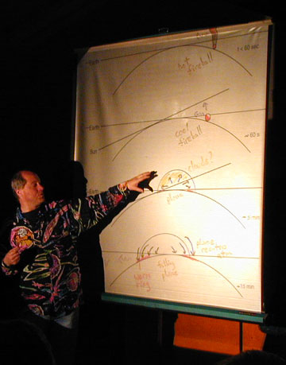
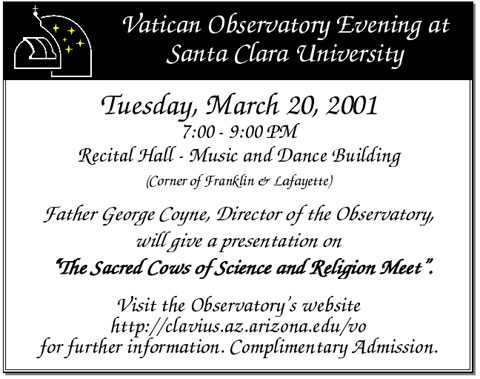

SJAA Ephemeris March 2001 |
SJAA Home |
Contents |
Previous |
Next
SJAA Ephemeris March 2001 |
SJAA Home |
Contents |
Previous |
Next
Tidbits from Here and There
Help Wanted at Orion
Want to work at Orion Telescope Center? Fun, interesting part-time job with good discount on Orion products. Call Marshall Smith or Ken Sablinsky (408) 255-8770.
Kevin Zahnle shows a diagram of illumination and view angles from the Shoemaker-Levy 9 impact on Jupiter, and its resulting fireball, from the February general meeting. Photo by Akkana Peck
|

|

Mail to:
Editors
Copyright © 2001 San Jose Astronomical Association
Last updated:
February 05, 2002
Previous | Contents | Next